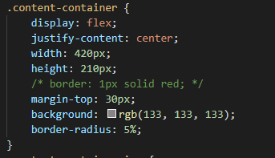

This is the first example of an optical illusion.
All boxes are simply using #AFAFAF to color them this way.
All boxes are simply using #AFAFAF to color them this way.
The rightmost side or rightmost box appears to be darker in color. This is due to your eyes automatically compensating for the gradient in the background.

If you want proof to see I'm telling the truth,
click "Disable the Illusion", and the gradient will turn off.
click "Disable the Illusion", and the gradient will turn off.